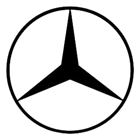
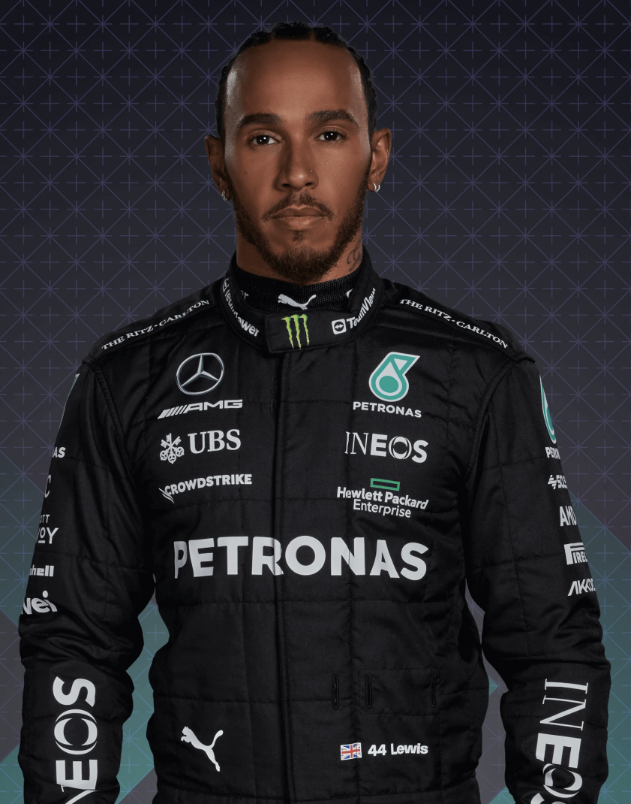
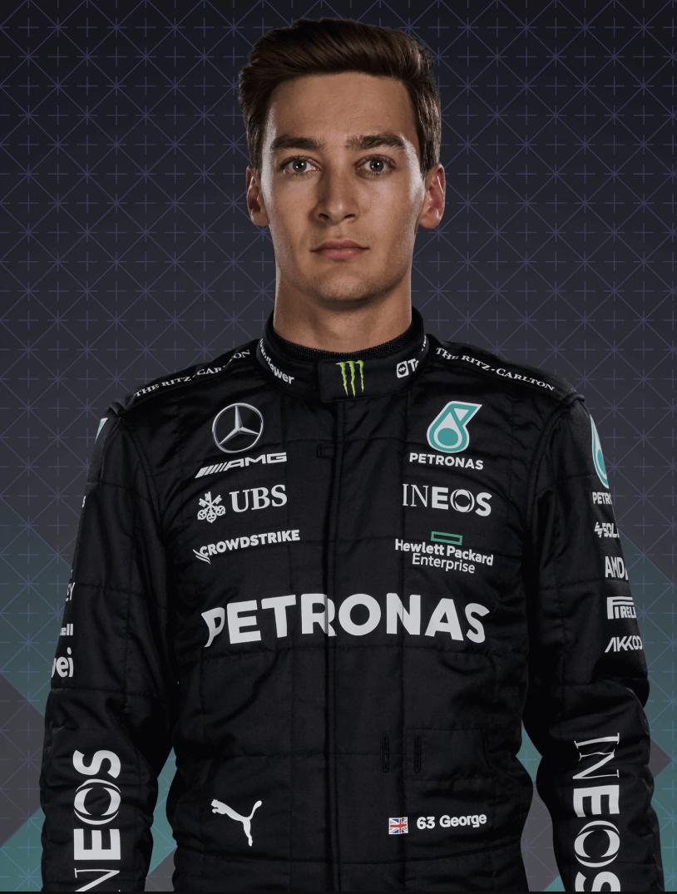

Mercedes F1 Team
|

44 Lewis Hamilton |

63 George Russel |
|---|
Mercedesova moderna obnova u Formuli 1 počela je stvaranjem sopstvenog tima za sezonu 2010. godine - platformom za meteoritički uspon na Grand Prix redosledu. Ekipa je od samog početka izazvala veliko uzbuđenje senzacionalnim povratkom Michaela Schumachera, ali uskoro su naslovi stizali i na stazi: tri postolja u njihovoj debi sezoni, sva zahvaljujući Nicu Rosbergu - koji je potom ostvario proboj s dvostrukom pobedom na Kini 2012. godine. Sledeće sezone spojen je s Lewisom Hamiltonom, a dvojac je nastavio sa epohalnim borbama za titulu dok su Srebrne Strela harale stazama, postajući jednom od najdominantnijih snaga moderne ere Formule 1. A sada, s Hamiltonom i mladim nadama Georgeom Russelom, Mercedes ostaje ekipa koju svi žele da pobede...
Radikalne promene pravila potresaju poredak, a Mercedesov W13 završava van očekivanja, ostavljajući ih "najboljima od ostatka" iza Red Bulla i Ferrarija. Novajlija George Russell ostvaruje njihovu jedinu pobedu - i prestiže Lewisa Hamiltona, koji prvi put u svojoj F1 karijeri ostaje bez pobede.
Nose se sa najvećim izazovom svoje dominacije turbohibrida. Lewis Hamilton gubi vozački naslov od strane Maxa Verstappena iz Red Bull-a, uprkos osvajanju osam trka, dok tim jedva zadržava titulu konstruktora, koju su zadržali osmu sezonu zaredom.
U trenutku kada mislite da ne mogu biti bolji, Mercedes - a posebno Lewis Hamilton - diže nivo još jednom brzinom. Trenutni šampion osvaja 11 trka i obara brojne rekorde na putu do sedme titule vozača, izjednačavajući se sa Schumacherom, uprkos izostanku s jedne trke zbog Covid-19. Dodajte tome dve pobede za Valtterija Bottasa i to je još jedna dominantna "dvostruka kruna" za Srebrne Strela.
Započinju sezonu s nezapamćenih pet uzastopnih jedan-dva pobede, a zatim dodaju još deset pobeda, obezbeđujući svoj šesti uzastopni "dvostruki naslov". Timski rad, umesto čiste brzine, često je ključ uspeha. Valtteri Bottas podiže svoju igru, što znači da Lewis Hamilton mora naporno raditi da obezbedi svoju šestu vozačku krunu, dovodeći Britanca do Michaela Schumachera i njegovog rekorda.